🎯 Misi
Minggu lalu kamu sudah menggabungkan konten dari beberapa aplikasi. Hari ini: buat dokumen yang benar, rapi, jujur, dan hemat tenaga.
- Selidiki laporan yang “sakit” (10 masalah)
- Jadi ahli satu topik, lalu ajari temanmu
- Perbaiki laporan dan slide, catat di Log Perbaikan
- Nilai karya kelompok lain: 2 bintang 1 harapan
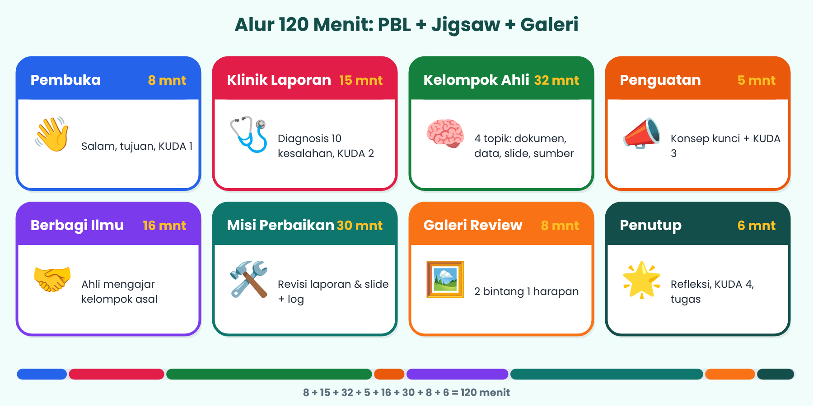
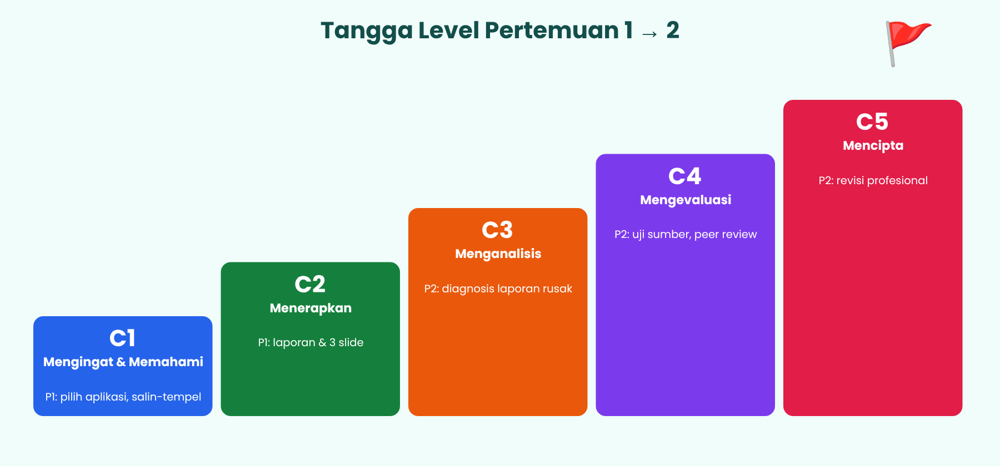
🩺 Klinik
Dokter mendiagnosis dulu sebelum mengobati. Tandai masalahnya, jangan diperbaiki dulu.
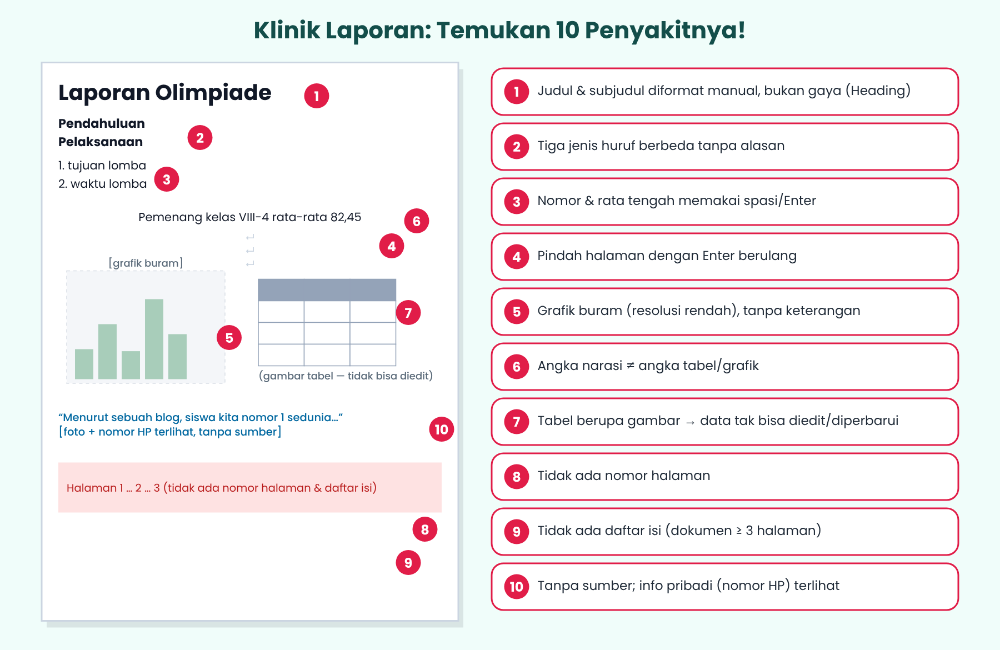
Intip kunci (coba dulu ya!)
- Judul manual → Gaya
- 4 jenis huruf → seragamkan
- Nomor/rata tengah pakai spasi → Numbering/rata tengah
- Enter berulang → Page Break
- Grafik buram → ambil ulang dari Excel + caption
- Angka narasi salah → cek ke data
- Tabel berupa gambar → tempel ulang
- Tanpa nomor halaman
- Tanpa daftar isi
- Tanpa sumber + nomor HP terlihat
🧠 Ahli
Ahli 1 — Dokumen
Pakai Gaya (Judul 1/2) agar daftar isi bisa otomatis. Caption: tabel di atas, gambar di bawah. Nomor halaman: Sisipkan → Nomor Halaman. Pindah halaman: Ctrl+Enter.
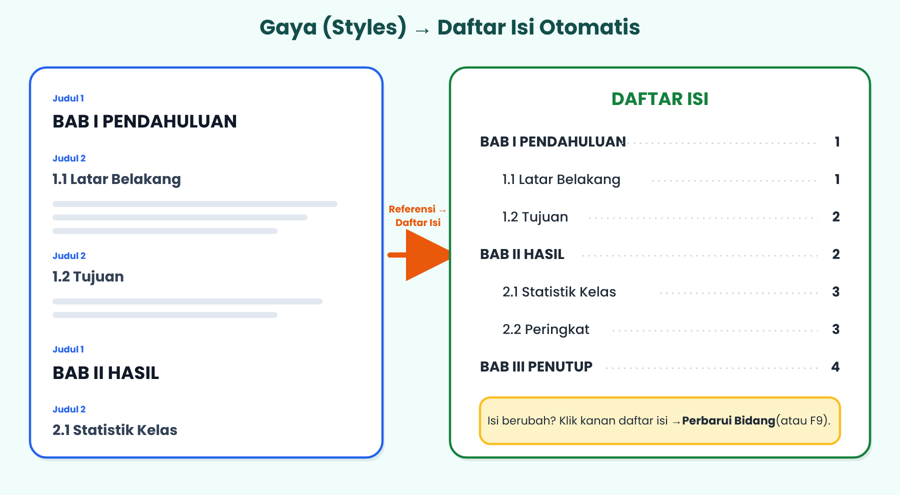
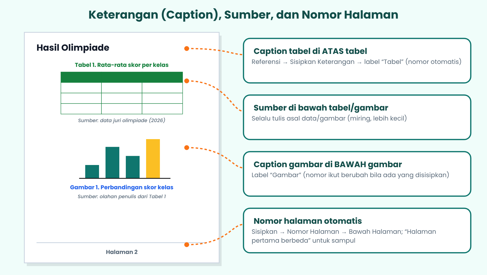
Ahli 2 — Data
Tanya: “Datanya masih berubah?” Tidak → gambar/sematkan. Ya (dan berkas Excel tetap) → tautkan.
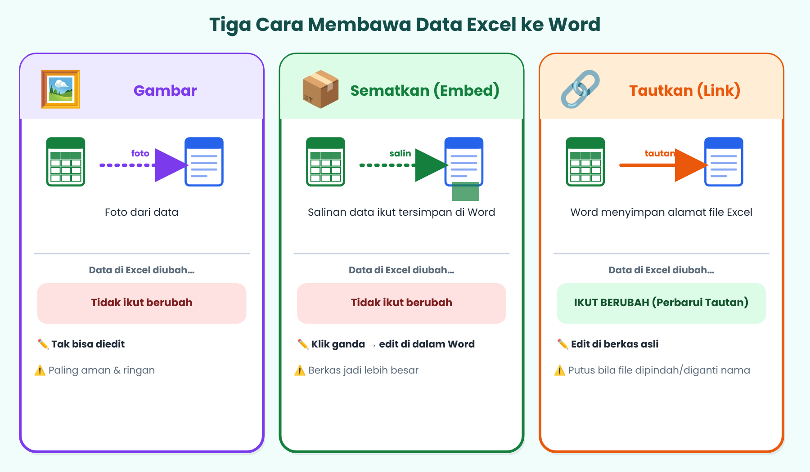
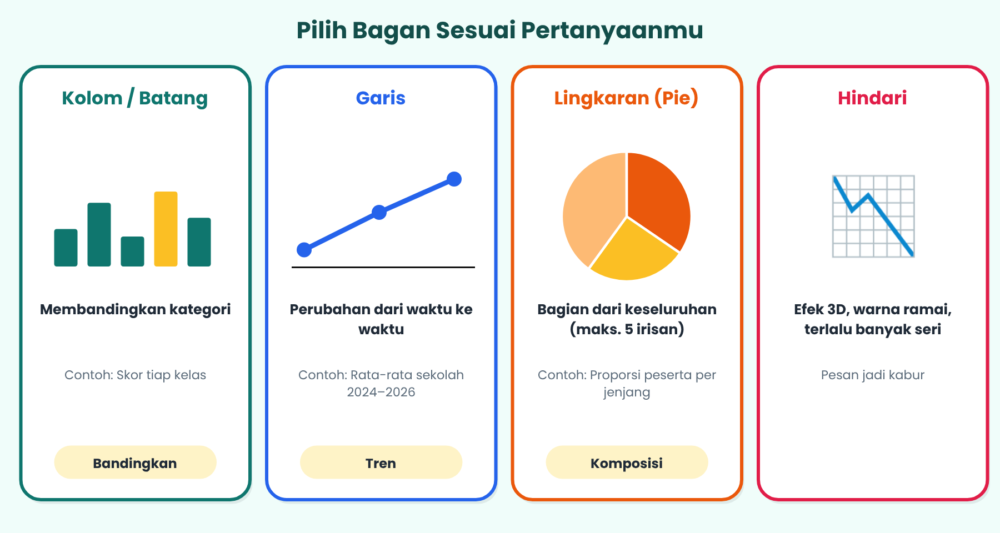
Ahli 3 — Slide
Atur huruf/warna/logo di Slide Master. Satu slide satu pesan, huruf ≥ 24 pt, kontras tinggi, gambar ditarik dari sudut.
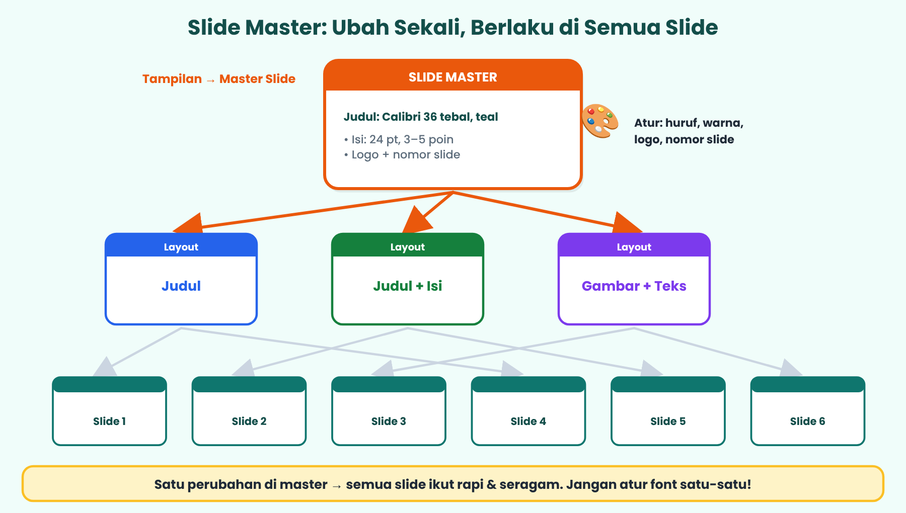
Ahli 4 — Sumber
Uji sumber dengan CRAP, cek lisensi, cantumkan sumber, sensor data pribadi.
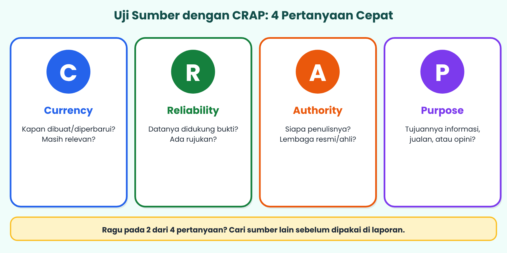
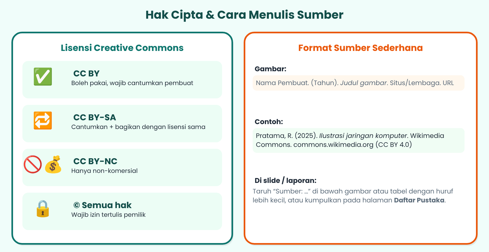
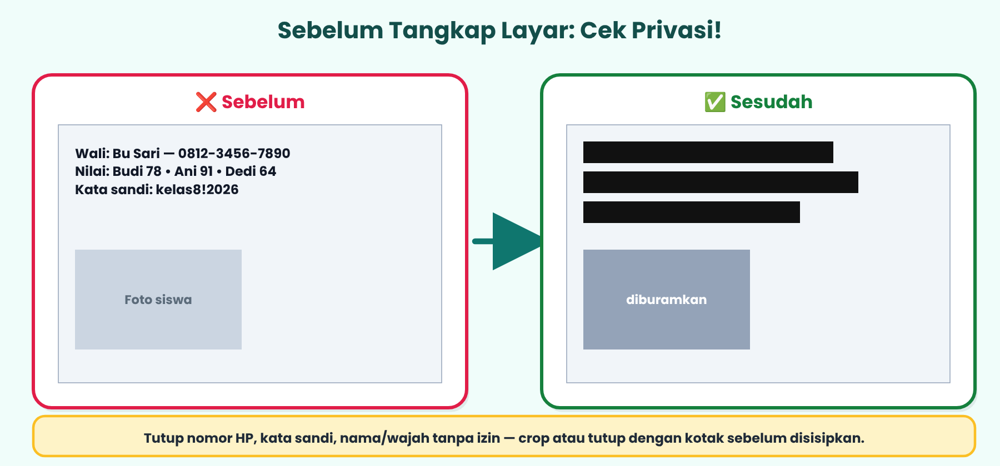
🛠️ Perbaiki
Perbaiki laporan_rusak.docx → Laporan_Revisi-X.docx dan slide_rusak.pptx → Slide_Revisi-X.pptx. Catat setiap perbaikan.
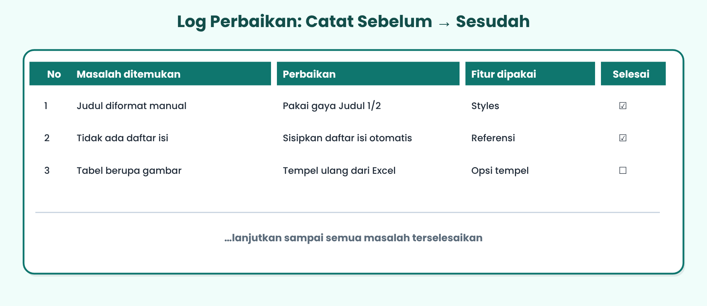
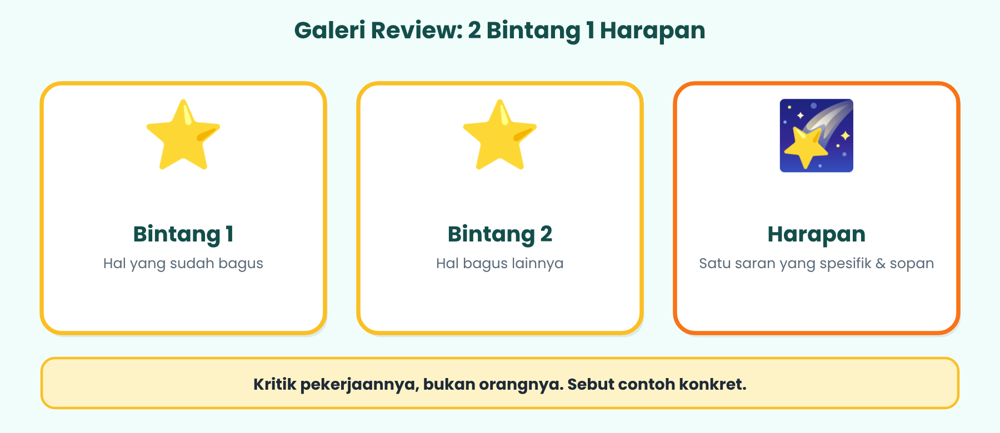